- Pack your food in mason jars or containers from your local convenience store! They can hold your yogurt, hummus, peanut butter, and any other fruits or veggies!
- Meal prepping the night before is a great way to make sure you get all of your nutrients in the next day!
- Always bring water with you. Maybe even add a slice of lemon! 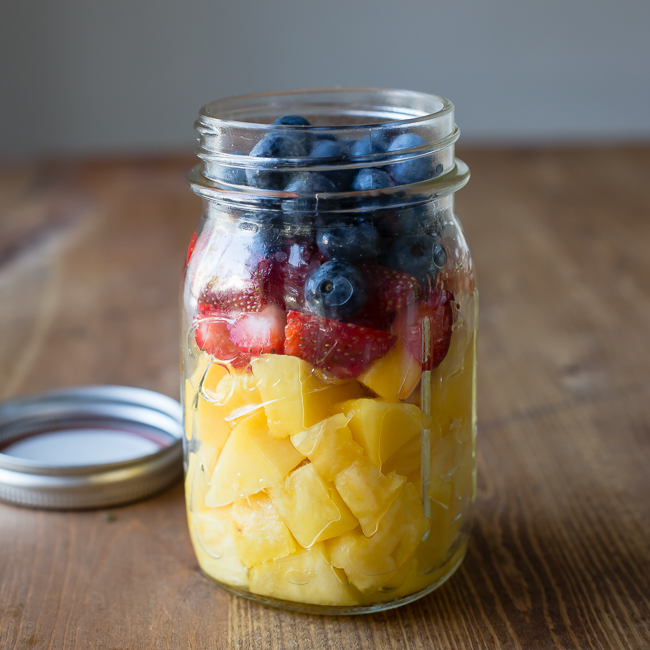 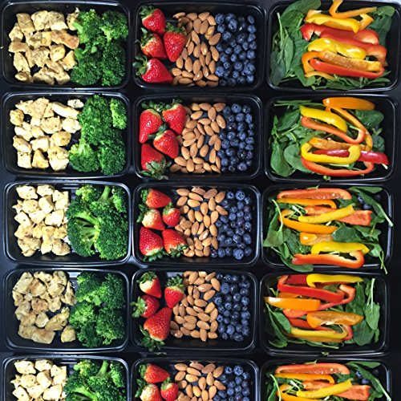 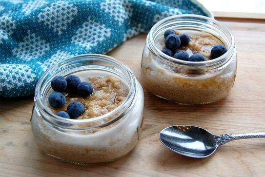 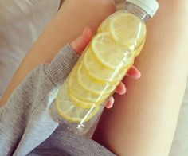
- All you need is a mat, a pair of hand weights (any size!), and maybe even a kettlebell!
- You can get such a great workout in with this equipment. They're inexpensive too!
- You have access to so many Youtube channels and fitness bloggers that give you the resources to workout in the comfort of your dorm room
- Working out with your friends is so fun and motivating! Make plans to workout with them so you can't back out beofore.
- All you really need is a mini fridge, a mini blender, and a microwave (but not always necessary).
- It's also great to have a mini coffe maker or keurig so that you can get your energy going in the morning!
- Keeping a food journal helps to aid in weight loss. Writing down what we eat helps to raise awareness in what we're doing. It's also great to write down how the foods make you feel. Write about the positive things that you are feeling! 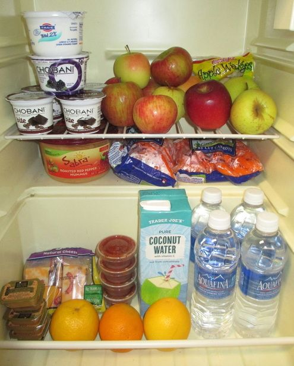 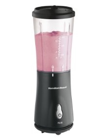 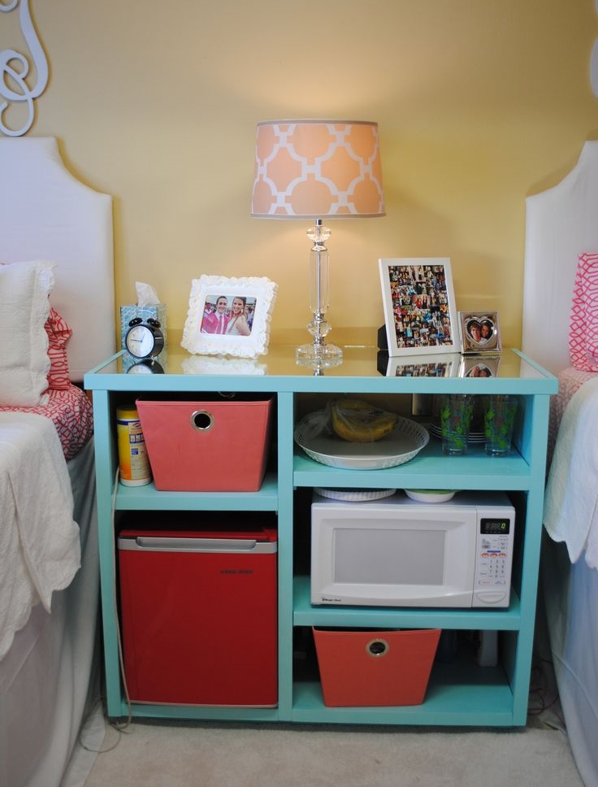 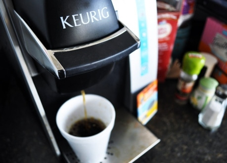 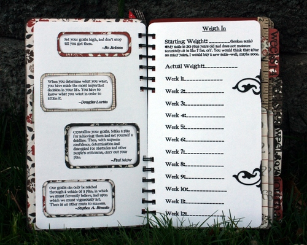
Healthy Living~ Dormstyle
Don't have time to head to the gym or enjoy a nice healthy meal? Hear is everything you need to get a quick workout in and pack food on the go!
- On the Go?

- No Gym, No Problem!
 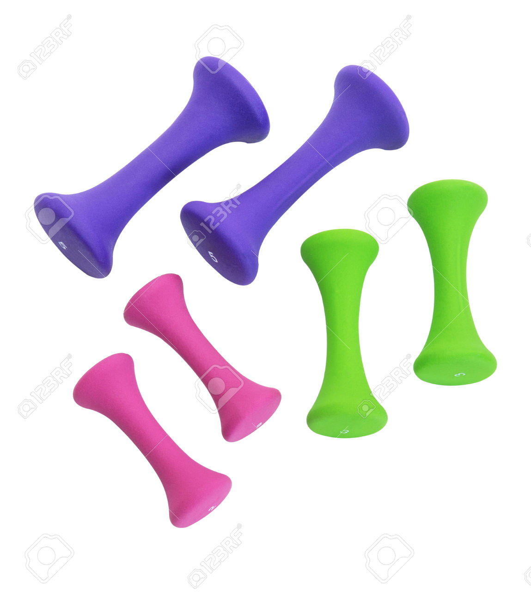
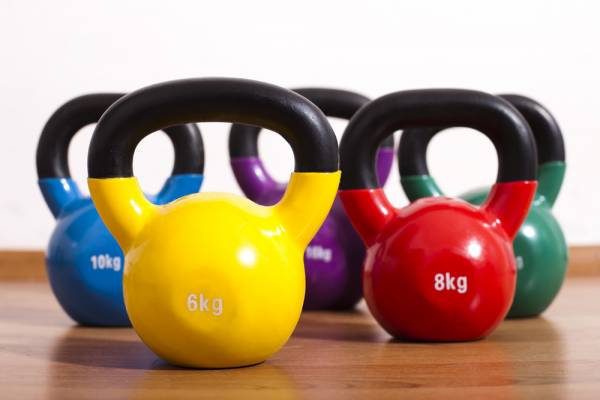
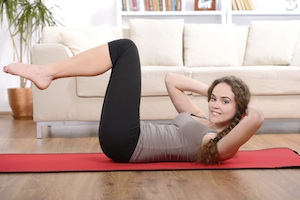
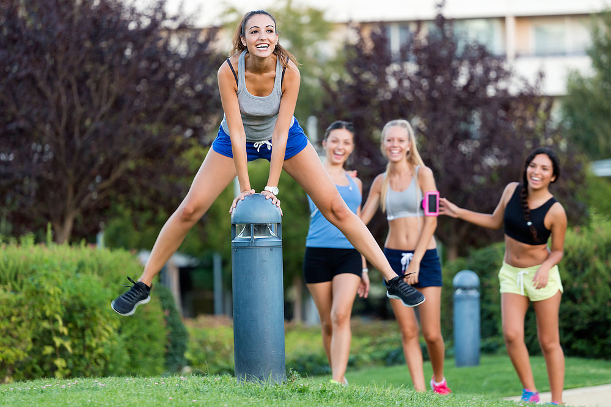
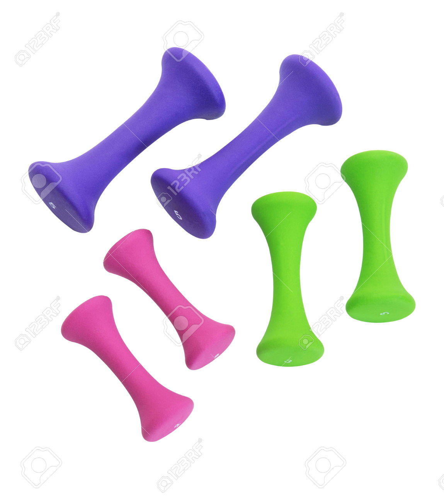
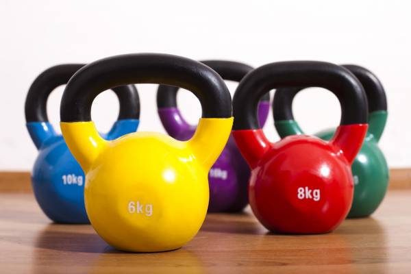
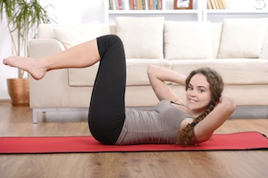
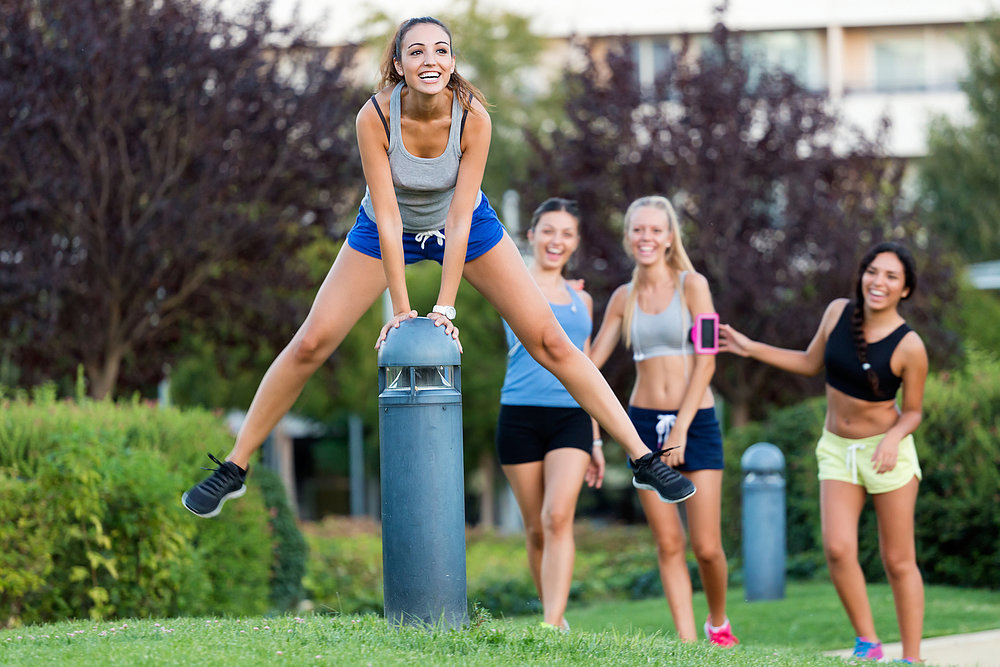
- Appliances